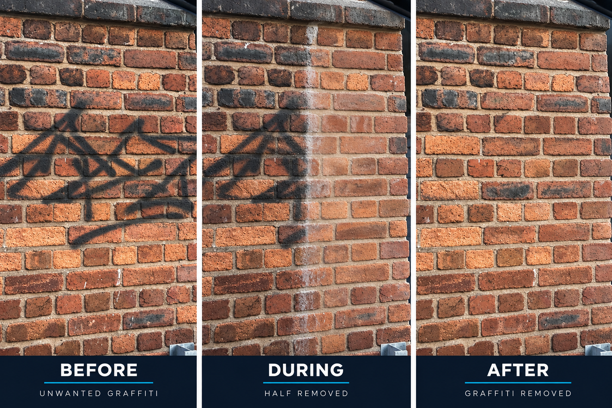

Professional Graffiti Removal
Fast, effective and professional response across North Wales, Cheshire and the North West.
Our Services
Professional graffiti removal, restoration and prevention for commercial, public sector and private clients.
Graffiti Removal
Professional removal of paint, marker and unwanted graffiti from a range of surfaces.
Surface Restoration
Careful treatment designed to restore affected surfaces while minimising unnecessary damage.
Anti-Graffiti Protection
Protective treatments can make future graffiti incidents easier and more cost-effective to remove.
Emergency Response
Fast, discreet response for businesses, landlords, public spaces and property managers.
About S&K
S&K Specialist Graffiti Response provides professional graffiti removal, restoration and preventative treatments across North Wales, Cheshire and the North West.
Experience You Can Trust
Over 20 years of Facilities Management experience, bringing a strong operational and professional approach to specialist graffiti response.
Qualifications & Protection
- Professional graffiti removal training
- BICS Registered
- ILM Leadership & Management
- IOSH Managing Safely
- £5 Million Public Liability Insurance
- Registered Waste Carrier
Before. During. After.
See the difference professional graffiti removal can make.

Real S&K graffiti-removal progression: the same brick wall before treatment, during removal and after the graffiti has been removed.
Our Process
We identify the graffiti, assess the surface and select the correct removal treatment.
We carefully treat the affected area to return the surface to an acceptable condition.
Where appropriate, anti-graffiti protection can make future incidents easier and cheaper to remove.
Commercial Services
Specialist graffiti response for organisations responsible for buildings, estates and public spaces.
Who We Support
- Commercial & industrial properties
- Housing & social landlords
- Local authorities & councils
- Retail & leisure
Operational Sites
- Property management
- Schools & education
- Transport & infrastructure
- Public spaces
Professional Compliance
S&K Specialist Graffiti Response operates with a strong focus on safe working practices, documentation and responsible waste handling.
- RAMS documentation
- COSHH controls
- Safety Data Sheets
- Professional treatment methods
- Responsible waste handling
- Registered Waste Carrier
- £5 Million Public Liability Insurance
Contact S&K
Need graffiti removed? Contact S&K Specialist Graffiti Response today.
Fast Response
North Wales | Cheshire | North West